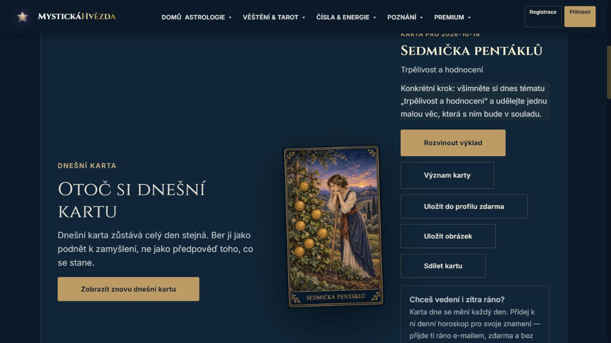
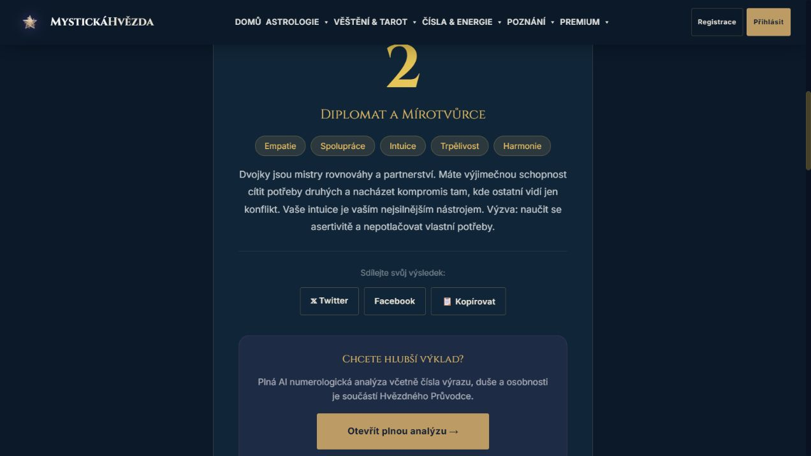
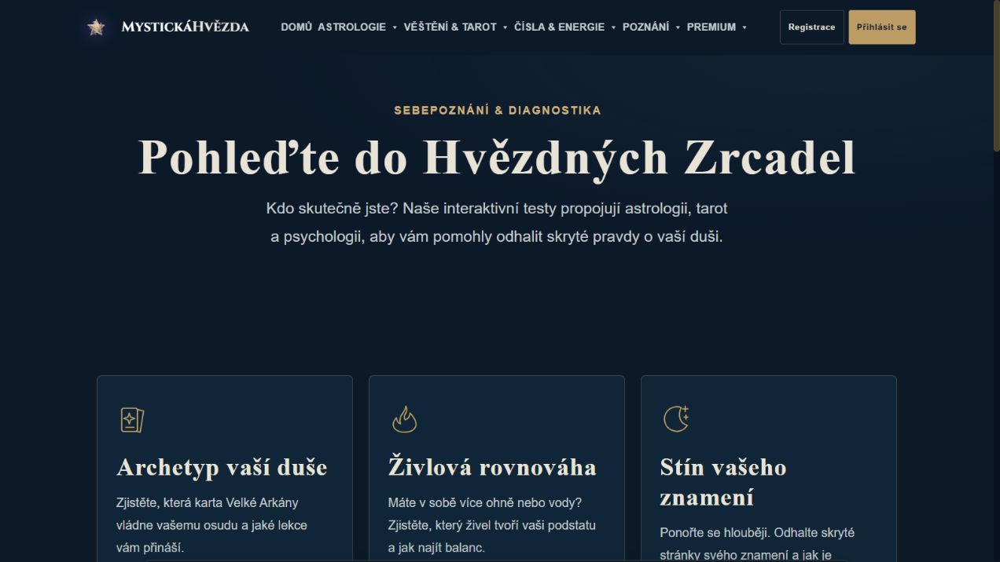

14. října 2026 · Audit kandidáta a veřejných endpointů · žádné nasazení
Nejdřív jednotný výsledek.
Potom další funkce.
Karty a grafický styl už tvoří dobrý základ. Největší prostor je teď ve skutečné hodnotě výsledku, pravdivosti náhradních stavů a spolehlivosti doručení.
34 sad, lokální mock služby. Není to potvrzení každé produkční objednávky.
Žádný chybějící obrázek ani v přímých odkazech inventáře 59 vstupů.
Otázka jednorázově · mapa jednorázově · členství měsíčně.
Nejbližší opravy
- Trvale uložená osobní mapa a opakovatelné doručení bez druhého generování.
- Žádná zdánlivě vypočtená natální mapa ani skóre shody po výpadku API.
- Stejná metoda životního čísla ve všech kalkulačkách.
- Pravdivý hlas AI průvodce a viditelně označený nouzový výklad.
- Vlastní konkrétní podnět pro každou denní kartu; sjednocení dynamických ikon a exportů.
Navržené těžiště značky
Malovaný tarot pro každodenní otázky, vztahy a sebepoznání.
Dnes → karta a jeden krok. Co řeším → bezplatná otázka a případně výklad. Chci porozumět → významy karet a praktické průvodce. Ostatní funkce zachovat v knihovně.
Hypotéza podle datovaného GSC exportu a produktu. Nebylo rozhodnuto rušit stránky ani měnit ceny.
Dnešní karta funguje, rada je příliš obecná

Po reloadu stejná karta. Ručně ověřeno bez účtu, žádný odběr nebyl odeslán.
Jedno datum, dvě redukční metody
1. 1. 1980: samostatná kalkulačka 2, plná numerologie 11. Potřebují společnou metodu nebo srozumitelné vysvětlení varianty.

Reprodukovatelné porovnáníGrafické detaily už jsou lokálně opravené

Přesný rozsah dokončených úprav